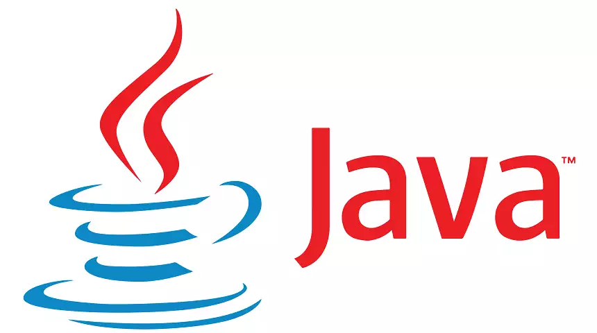

About Java
Java is a high-level, general-purpose, memory-safe, object-oriented programming language. It is intended to let programmers write once, run anywhere (WORA),[18] meaning that compiled Java code can run on all platforms that support Java without the need to recompile.[19] Java applications are typically compiled to bytecode that can run on any Java virtual machine (JVM) regardless of the underlying computer architecture. The syntax of Java is similar to C and C++, but has fewer low-level facilities than either of them. The Java runtime provides dynamic capabilities (such as reflection and runtime code modification) that are typically not available in traditional compiled languages. Java gained popularity shortly after its release, and has been a popular programming language since then.[20] Java was the third most popular programming language in 2022 according to GitHub.[21] Although still widely popular, there has been a gradual decline in use of Java in recent years with other languages using JVM gaining popularity.[22]